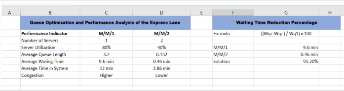
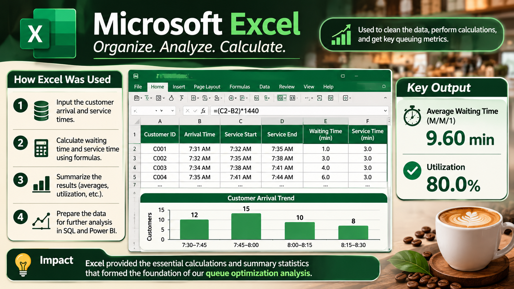
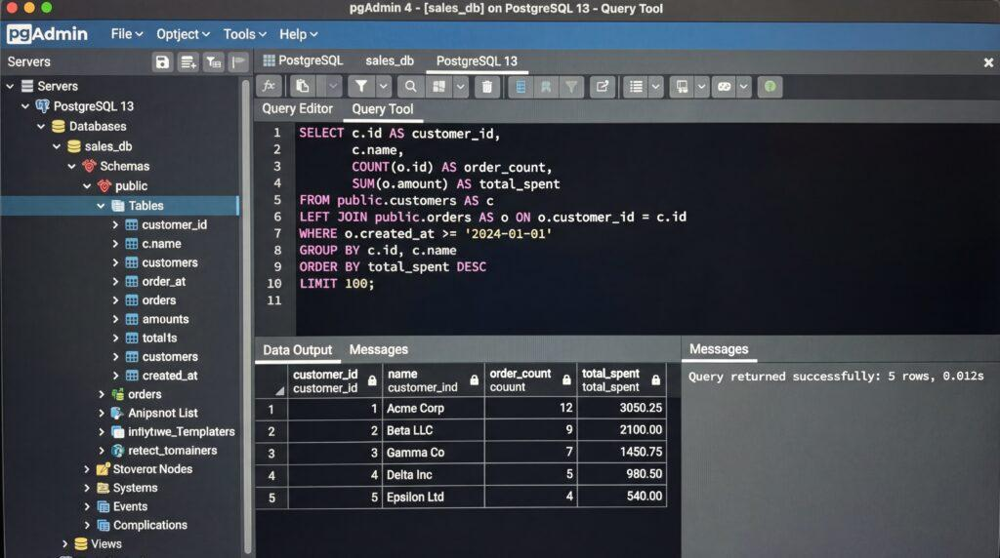
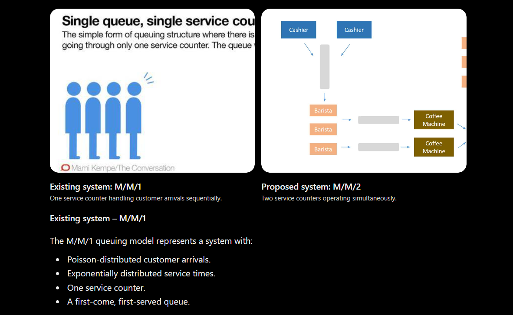
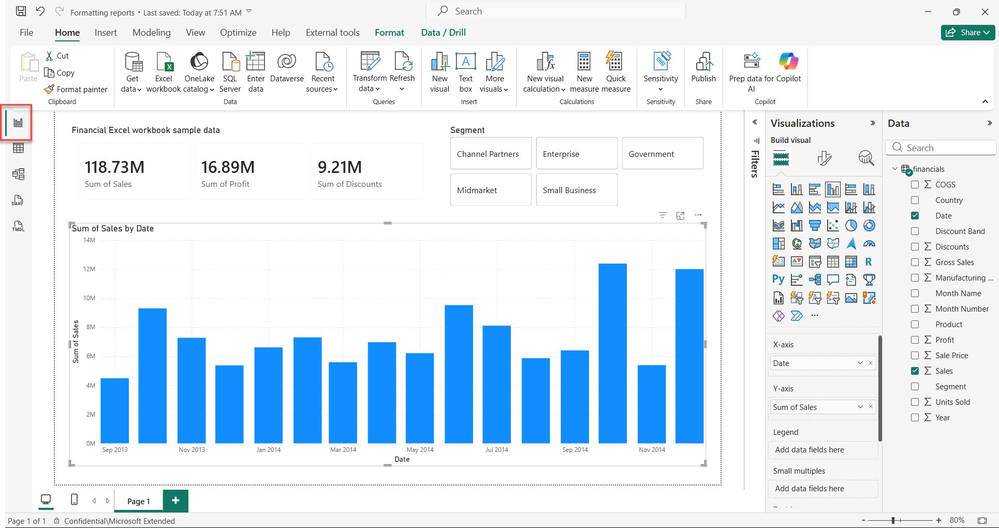
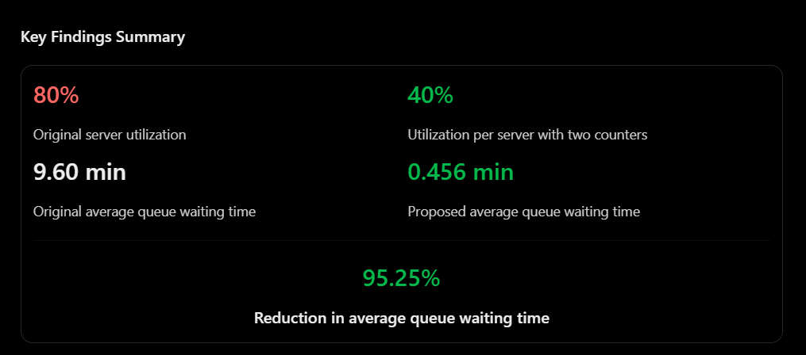
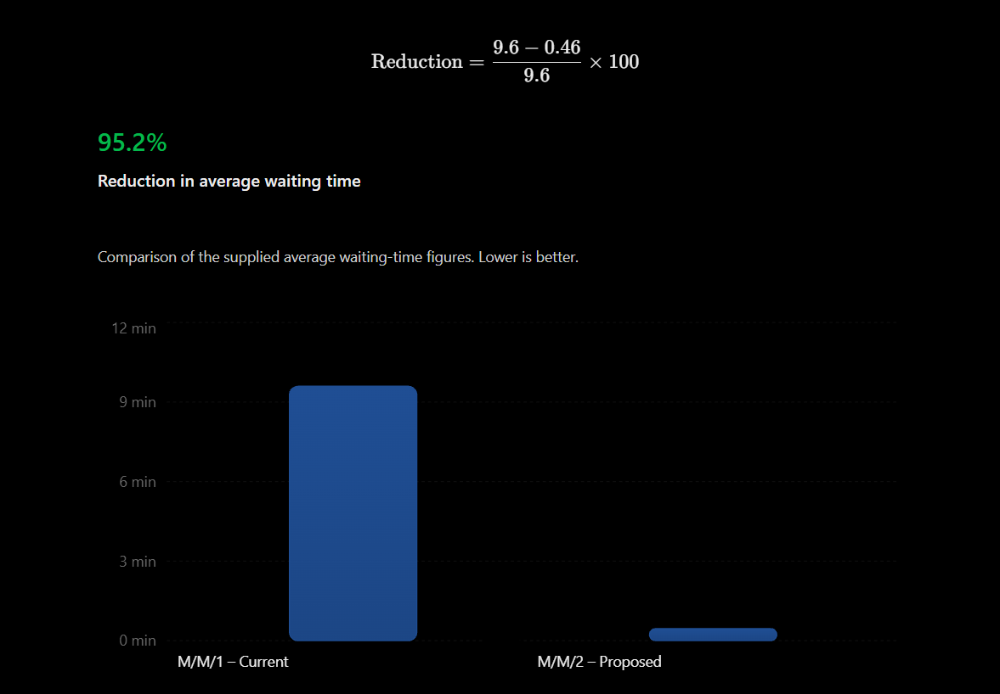

Queuing Analysis of the Fast Lane Adoptation of a Coffee Shop
Fastlane adoptation is essential for the Queuing problem

The problem
ExpressLane, a high-volume campus coffee shop, experiences long queues and extended customer waiting times during the morning rush hour (7:30 AM to 8:30 AM) due to its limited single-counter service capacity. With an 80% server utilization rate and an average waiting time of 9.60 minutes, the existing system struggles to accommodate the increasing number of student customers before classes begin. This results in queue congestion, potential customer abandonment (balking and reneging), and possible lost sales as students may choose competing coffee shops.
The data
The ExpressLane Queue Optimization study focuses on customer arrivals and service capacity during the morning rush hour, specifically from 7:30 AM to 8:30 AM. The analysis uses queuing theory to evaluate the existing single-counter system (M/M/1) and compare it with a proposed two-counter system (M/M/2).
The baseline system has an average customer arrival rate of 20 customers per hour and a service rate of 25 customers per hour. This results in an 80% server utilization rate, an average queue waiting time of 9.60 minutes, and a 51.2% probability of having more than two customers in the system.
My process
- Step 1: Data collection and observation
The first step was to understand the actual customer flow during the busiest period of the day.
The observation focused on:
- Customer arrival times
- Number of customers arriving within a given interval
- Time spent waiting in the queue.
- Time required to complete each transaction.
- Number of customers served.
- Instances of customers leaving or abandoning the queue, if recorded.
- Step 2: Organizing and analyzing the data using Excel
Excel was used as the initial analytical tool to organize the observations and calculate important queuing indicators.

How Excel was used:
- Entered customer arrival, service-start, and service-end times.
- Organized the records chronologically.
- Calculated the waiting time of each customer.
- Calculated the service time of each transaction.
- Summarized customer arrivals and service performance.
What this accomplished:

Excel provided the preliminary measurements needed to understand how much time customers spent waiting and how quickly the coffee shop could process transactions.
It also provided the numerical basis for comparing the original system with the proposed fast-lane arrangement.
- Step 3: Managing and querying the data using SQL
SQL was used as the database management and querying component of the proposed analytical workflow.
Once the observations were structured into a database, SQL could retrieve and summarize the records needed for the queuing analysis.

How SQL was used:
- Retrieved customer records within the morning rush-hour period.
- Grouped customer arrivals by time interval.
- Calculated average waiting and service times.
- Counted the number of transactions processed.
- Prepared summarized data for visualization.
What this accomplished:
SQL made it easier to retrieve specific records and generate summarized datasets without manually examining every transaction.
- Step 4: Queuing analysis and simulation
This was the most important stage of the project because it addressed the actual operational problem.The existing single-counter arrangement was evaluated against a proposed system with an additional service counter or barista.

The purpose of the simulation was to estimate how the additional counter could affect customer waiting times and overall service performance.
How the solution was evaluated:
- Establish the baseline waiting time under the original one-counter arrangement.
- Estimate the service capacity of the proposed two-counter system.
- Compare the expected waiting time under both arrangements.
- Determine whether the improvement justifies adding another service counter or barista.
- Step 5: Creating the interactive dashboard using Power BI
- Imported the cleaned and summarized data from Excel or SQL.
- Created KPI cards to display important performance indicators.
- Developed charts comparing the original and proposed queuing systems.
- Presented customer arrival patterns during the morning rush hour.
- Visualized the reduction in waiting time after adding a second counter.
Power BI was used to transform the summarized analytical results into a visual dashboard that management could easily understand.The objective was to make the difference between the existing queuing system and the proposed fast lane immediately visible.
How Power BI was used:

The dashboard makes it easier to communicate the benefits of adding a second service counter and supports management's decision to adopt the fast lane.
Key findings
- High Server Utilization: The existing M/M/1 system operates at 80% utilization, indicating that the single service counter is handling a substantial portion of its maximum service capacity.
- Significant Queue Congestion: The baseline system has a 51.2% probability of having more than two customers in the system, indicating a considerable risk of congestion during morning rush hours..
- Improved Service Efficiency: Adding a second service counter through the M/M/2 model reduces per-server utilization from 80% to 40%, allowing customers to be served more efficiently.
- Reduced Customer Waiting Time: The proposed two-counter system reduces the average queue waiting time from 9.60 minutes to just 0.456 minutes (approximately 27.4 seconds), representing a 95.25% reduction.
- Need for Strategic Staffing: Implementing dual staffing during peak hours (7:15 AM to 8:45 AM), separating order-taking and drink preparation, and establishing a dedicated grab-and-go express line can help minimize customer congestion.
Overall Finding:

The analysis demonstrates that expanding the coffee shop's service capacity from one counter to two can significantly reduce waiting times and improve operational efficiency. Implementing a dedicated fast lane, supported by strategic staffing and workstation organization, is a recommended solution to address morning rush-hour congestion.
Result and impact
The primary result of the analysis was the significant reduction in customer waiting time when moving from a single-counter system to a two-counter system.

The results indicate the following potential improvements:
- Reduced waiting time: Customers spend significantly less time waiting for their orders.
- Improved customer satisfaction: Faster service can provide a more convenient experience for students.
- Better operational efficiency: Two service providers can handle customer demand simultaneously.
- Reduced risk of lost sales: Shorter queues may discourage customers from abandoning the purchasing process.
- Improved resource allocation: Management can schedule additional staff during peak hours rather than throughout the entire day.
Importantly, the 95.2% figure represents the reduction in the supplied modeled waiting times. Actual customer satisfaction, sales recovery, and abandonment reductions would need to be measured after implementation.